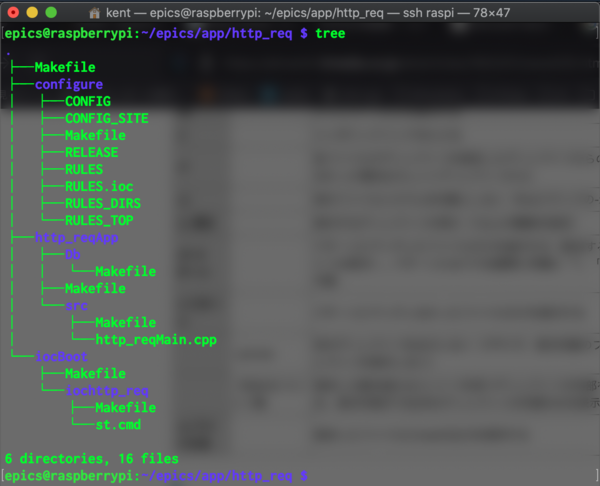

基本動作例１： Googleにtelnet接続するEPICS制御¶
検証目標¶
IOCを構築．
IOCの動作検証．
IOCとOPI間で通信する．
( IOC:Input/Output Controller, OPI:OPerational Interface )
前提条件¶
IOCとして "RaspberryPi" 、OPIとして、手元PCのmacOSを使用する．
RaspberryPi-mac間はLANケーブルで接続し、RaspberryPiはインターネットへ接続できる．(同一LAN内.)
接続先は、適当なサーバ：www.google.com:80 (80はHTML通信用のウェルノウンポート) とし、HTTPリクエストする．
制御モジュールとして、 "StremDevice" を使用する．
IOC(RaspberryPi)に、epics-base, Asyn, StreamDevice はインストール済み
OPI(macOS)からは, pythonコンソールから "pyEpics" (pipからインストール可能)を利用する．
EPICS_BASEは、"$HOME/epics/epics-base", サポートモジュールは、"$HOME/epics/support/"にインストールされており、 Appの作成場所は, "$HOME/epics/app/"とする．
IOC構築¶
IOC構築の手順¶
IOC-App(アプリ)構築の基本手順は、以下である．
ベースアプリ を作成する．
configure/RELEASE にコンパイルに必要な情報(EPICS_BASEのパス/モジュールのパス)を記載する．
"xxxApp" ディレクトリに、データベース及び使用するモジュールの情報を記載する．
StreamDeviceなどモジュールを利用する際は、モジュールに応じた設定ファイル（例えばStreamDeviceの場合、 protocols ディレクトリに xxx.proto ） を作成する．
iocBoot ディレクトリの ioc_xxx**内にあるIOC初期化スクリプト **"st.cmd" を編集し、実行可能とする．
アプリのベースディレクトリ（$(TOP)としてMakefile中に記載されている）にて、 $ make 、したのちに、sudo 権限付きで IOC初期化スクリプト "st.cmd" を実行する
以下、上記手順について詳述する．
1. ベースアプリの作成¶
makeBaseApp.plを用いたベースアプリの作成
$ mkdir -p ~/epics/app/http_req $ cd ~/epics/app/http_req $ makeBaseApp.pl -t ioc http_req $ makeBaseApp.pl -i -t ioc http_req
1回目のmakeBaseApp.plで作成されるファイル・ディレクトリは以下．
Makefile
configure
http_reqApp
2回目のmakeBaseApp.plで作成されるファイル・ディレクトリは以下．
iocBoot
ディレクトリツリーは以下．

{kind=link}
2. 共通コンパイル設定事項の編集 ( configure/RELEASE )¶
configure/RELEASEに、共通のコンパイル設定（モジュールの場所等、）を例えば以下のように記載する．
ASYN = /home/epics/epics/support/asyn STREAM = /home/epics/epics/support/StreamDevice
3. データベースファイルとコンパイルの準備¶
データベース及び使用するモジュールの情報を記載し、~/epics/app/http_req/http_reqApp/Db/http_req.dbを作成する．
$ nano ~/epics/app/http_req/http_reqApp/Db/http_req.db ( 以下を保存 ) record( stringin, "http:get" ) { field( DESC, "getbitstream" ) field( DTYP, "stream" ) field( INP , "@http_req.proto getVal web") }データベースのコンパイル対象として、上記の"http_req.db"を追加．
$ nano ~/epics/app/http_req/http_reqApp/Db/Makefile ( 以下を追記 ) DB += http_req.db
その他モジュールを利用する場合は、IOCの通信コードのコンパイルに使用するモジュール情報を、 "http_reqApp/src/Makefile" に記載し、コンパイルできるようにする．
$ nano ~/epics/app/http_req/http_reqApp/src/Makefile ( 以下を追記 ) http_req_DBD += stream.dbd http_req_DBD += asyn.dbd http_req_DBD += drvAsynIPPort.dbd http_req_LIBS += stream http_req_LIBS += asyn
4. StreamDeviceの設定ファイル ( "protocol" )の作成¶
アプリのベースディレクトリ ( ~/epics/app/http_req/ )にディレクトリ "protocols"を作成し、StreamDeviceの入出力情報を記載する．
$ mkdir $HOME/epics/app/http_req/protocols $ nano http_req.proto (以下を記入) Terminator = CR LF; getVal { out "GET / HTTP/1.1\nHost: www.google.co.jp\n"; in "%39c"; ExtraInput = Ignore; }
5. IOC 初期化スクリプト "st.cmd" の編集¶
IOC初期化スクリプト ( iocBoot/iochttp_req/st.cmd ) に、以下の情報を記載する．
StreamDeviceを使用する場合、protocolsディレクトリの位置を記載する．
初期化時にロードするデータベースファイルを記載する．
ethernetケーブルなどの、ハードウェアを使用する場合は、設定を記載する．
ここでは、以下を記載する．
epicsEnvSet( "STREAM_PROTOCOL_PATH", ".:../../protocols" ) dbLoadRecords( "db/http_req.db", "user=epics" ) drvAsynIPPortConfigure "web", "www.google.co.jp:80",0,0,0
スクリプトに実行権限を与えておく．
$ chmod u+x $HOME/epics/app/http_req/iocBoot/iochttp_req/st.cmd
6. make 及び、初期化スクリプト "st.cmd" の実行¶
ベースディレクトリにて make する．
$ cd $HOME/epics/app/http_req/ $ make distclean $ make
初期化スクリプトを実行する．
$ cd $HOME/epics/app/http_req/iocBoot/iochttp_req/ $ sudo ./st.cmd
IOCの動作状況の確認¶
EPICSコンソール上での確認¶
EPICSコンソールへエラーなく遷移していることを確認．
以下を実行．
epics> dbpf http:get 0 epics> dbgf http:get
戻り値は、
DBF_STRING: "HTTP/1.1 200 OK"
ローカルからのCA¶
epics-baseがインストールされているIOC/OPIでは、PV(Process Variable)にCA(Channel Access)が可能
別コンソールを立ち上げて、以下コマンドを実行
epics@raspberrypi: ~ $ caget http:get http:get HTTP/1.1 200 OK
OPI（手元macOS）からのCA¶
同一ネットワークにLAN接続してある OPI(手元PC:macOS)からCA可能．
以下、IPアドレス/ポート番号の設定を環境変数にセット．
$ export EPICS_CA_ADDR_LIST="169.254.202.104:5064" ( e.g.1 $ export EPICS_CA_ADDR_LIST="1.2.3.255 8.9.10.255" etc. ) or ( e.g.2 $ export EPICS_CA_ADDR_LIST="1.1.1.1" and, ) ( $ export EPICS_CA_SERVER_PORT=5064 etc. )
コンソールからCA．
$ caget http:get
pyEpicsからCA．
$ python3 >>> import epics >>> epics.caget( "http:get" ) 'HTTP/1.1 200 OK'
{kind=link}
OPIからIOCを介して、制御( HTTPリクエスト ) を実施することができた．
参考URL¶
参考ノート： "https://note.com/dev_associate/n/nfa4605c70f60", "https://note.com/dev_associate/n/nd886d700b10a"
OPI/IOC通信時のポート番号、IPアドレスの設定 ( https://epics.anl.gov/EpicsDocumentation/AppDevManuals/ChannelAccess/cadoc_4.htm )